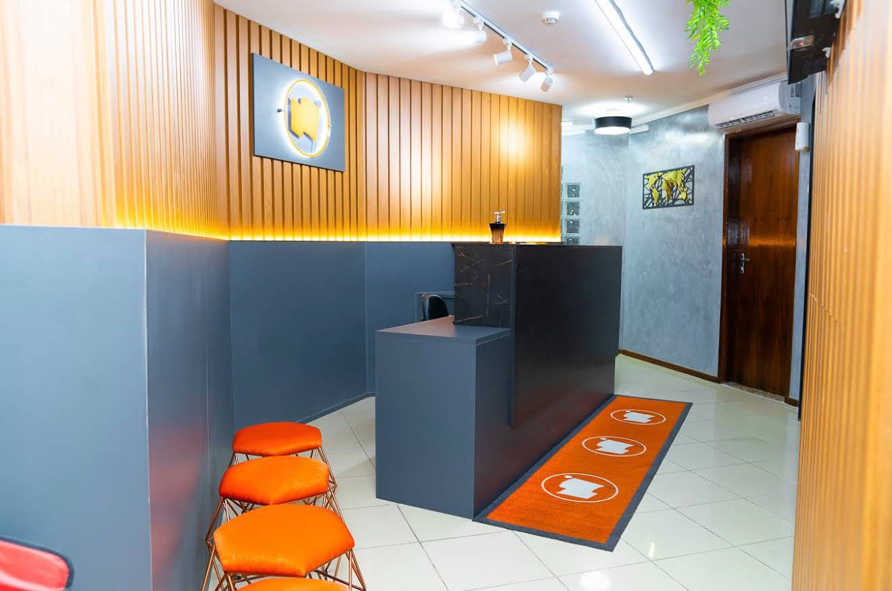

Atuação nacional e internacional, com atendimento próximo e soluções jurídicas pensadas pra cada caso — sem fórmula pronta.
O escritório atua de forma multidisciplinar, com presença nacional e internacional, unindo técnica jurídica e visão estratégica pra conduzir cada questão com clareza e responsabilidade.

Estrutura pensada pra atender diferentes tipos de demanda jurídica sob o mesmo teto, sem precisar buscar outro escritório pra cada questão.
Casos conduzidos além de São Paulo, com capacidade de atender demandas fora do estado e do país.
Cada caso analisado com rigor técnico e busca por soluções atualizadas — não só o caminho tradicional.
Advogado
19 avaliações reais de clientes atendidos
Ver avaliações no GoogleEnvie uma mensagem pelo WhatsApp. O escritório retorna o contato pra entender sua necessidade e orientar os próximos passos.
Conversar pelo WhatsApp ↗